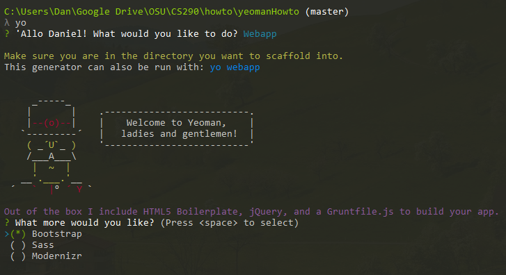

Creating the Page
Letting Yeoman do the work for us
First, we need a specific directory for yo to create its contents. For this, type
mkdir folderName
cd folderName
With all the background pieces assembled, it’s now time to create our website! To begin, we simple typeyo
From this page, you’ll be given a selection of potential projects. For our purpose, selectwebapp
On the next menu, we’ll be prompted to select which additional library to include. Rather than play around with this, leave it set to “Bootstrap” and continue.  Yo will now automate the rest of the initialization process.But what exactly did we create just now? Let's explore.
Part 4: Exploring the Files